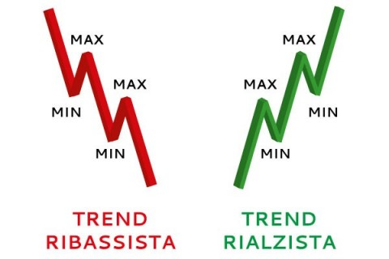

Home
Telegram
Corso Premium
Corso Free
Contattami
Mr.None Crypto
Corso Crypto Gratuito
video corsi
EXCHANGE
Se non hai ancora un account, ti invito a registrarti ora in una o piu di queste piattaforme.
Registrandoti con questi link hai il -20% sulle Fee
Binance
Bybit
Kucoin
Metamask
Per registrarti su Metamask
Scarica Ora
♦ SCARICARE METAMASK
♦ ANDARE SU:
IMPOSTAZIONI /NETWORK / ADD NEW NETWORK / CUSTOM NETWORK / E COPILARE I MODULI.
♦NETWORK NAME: SMART CHAIN
♦RPC URL: htt://bsc-dataseed.binance.org/
♦CHAIN ID: 56
♦SYMBOL: BNB
♦BLOCK EXPLORER URL: https://bscscan.com
Materiale
♦Trading View: Analisi tecnica
♦CoinMarketCap: Andamento di varie piattaforme crypto
♦Dex Tools: Permette di vedere grafici delle coin che non sono listate sugli exchange ma solo sui dex
♦Defi Llama: Tenere sotto controllo la defi classifica piattaforme + usate, e la loro TVL
♦Investing.com: Aggiornamenti e news
Investing.com Download
Storia Di Bitcoin e Info
STORIA BITCOIN:
-bitcoin nasce nel 2008.
-il suo creatore e satoshi nakamoto la quale idenità e anonima.
-prima moneta ad essere stata creata.
CARRATERISTICHE DI BITCOIN:
-pubblico -opensourch -sicuro -costi di transazione -energia -cittografia
CILCLI E HALVING:
Ogni 4 anni c'è un halving di btc al halving va a verificarsi una bullrun cio'è un gran movimento a rialzo.
HALVING AVENUTI:
primo: 2012 valore massimo dicembre 2013.
secondo: 2016 valore massimo dicembre 2017.
terzo: 2020 valore massimo dicembre 2021.
con l'halving il prezzo di bitcoin sale perchè il premio dei miner si dimezza di conseguenza bitcoin sale.
BULL/BEAR MARKET:
bullmarket: verificarsi del rialzo di tutte le altcoin.
bearmarket:scendono la maggior parte delle crypto si verifica dopo l'halving di bitcoin i minimi si raggiungono durante il terzo anno dopo linizio dell'halving.
EXCHANGE WALLET:
exchange: luogo che permette l'aquisto di crypto.
wallet: luogo dove conservare le propie crypto.
EXCHANGE DECENTRALIZZATO:
-ti permette di comprare crypto senza registrarti
esempio:
-uniswap -pancakeswap
-le crypto vengono conservate in wallet esterni
esempio:
-metamask -trust wallet
PROSSIMO HALVING DI BITCOIN:
Prossimo halving 2024
Bullrun 2025
PROSSIMO TREND LA DEFI

Analisi Tecnica
Analisi Tecnica Base:
TREND RIALZISTA:
Massimi e minimi più alti del precedente.
TREND RIBASSISTA:
Minimi e massimi inferiori al precedente.
Figure Di Inversione
Figure Di Continuazione
Inversione Del Trend
L’inversione viene creata con la conferma del minimo inferiore al precedente e max inferiore al precedente.
Conferma definitiva quando rompe il lowerlow.
Strategia Long Term
CHE COSA FARE?
-Iniziare a comprare un anno dopo la bullrun Cioè ai minimi.
-creare un portafoglio crypto
-all’inizio della bullrun vendere al ath ad un x5/x10 del tuo investimento, un 20/50% del portafoglio per dedicararlo ai progetti che si svilupperanno durante la BULL RUN In quel periodo si viene a conoscenza dei progetti vincenti.
PROGRAMMA DELL'HALVING DI BITCOIN
L'halving di Bitcoin è programmato sulla quota di un blocco, non date.
L'halving avviene ogni 210.000 blocchi.
L'halving del 2020 avverrà sul blocco da 630.000.
Nel 2024, l'halving avverrà sul blocco da 840.000.
QUANDO AVVIENE L'HALVING DI BITCOIN NEL 2024?
L'Halving del 2024 si avrà probabilmente tra Marzo 2024 e Giugno 2024.
Gemme Da 10 X
COME TROVARE LE GEMME DA 10X?
Le gemme da 10 X Sono da cercare è trovare in un momento di bear market essendo più facile
-Da grafico cercare la zona di accumulazione
-Guardare il team se e con esperienza ed e solido se c’è il team fare ricerche su LINKEDIN
-guardare il sito ufficiale della crypto
-Utilità del progetto da valutare bene
-cercare e capire se e quanti holder ci sono utilizzando COINMARKETCAP
GEMME DA 10 X DA AVERE NEL PORTAFOGLIO:
-KP3R
-GALA
-VET
-SOL
ATTENZIONE ⚠️ FATE LE VOSTRE OPPORTUNE VALUTAZIONI PRIMA DI INVESTIRE NESSUNO DI QUESTI CONSIGLI E UN CONSIGLIO FINANZIARIO!!
Strategia Operativa
STRATEGIA OPERATIVA BASE
-CAPIRE L’ANDAMENTO DI MERCATO SU TIME FRAME DAYLI/H4/H1
-I TIME FRAME PIU LUNGHI PREVALGONO DI PIÙ
-L’IDEALE PER UN TRADE DAYLI SAREBBE H4/H1
STRATEGIA
FASE 1:
TROVARE SUPPORTI E RESISTENZE SUL GRAFICO IN TIME FRAME DAYLI.
FASE 2:
IN TIME FRAME H4 TRACCIARE UNA TRENDLINE
FASE 3:
TIME FRAME H1 TRACCIARE IPOTETICA ZONA DI SUPPORTO DALL’ULTIMA CANDELA INVERSA DOPO UN GROSSO RIALZO/RIBASSO
FASE4:
CAPIRE L’ANDAMENTO DEL TREND OPTARE PER UN BUY A FAVORE DEL TREND
Last Candel
LAST CANDEL
EQUIVALE ALL’ULTIMA CANDELA INVERSA PRIMA DI UNA GROSSA INVERSIONE A RIALZO OPPURE A RIBASSO ED E UNA POSSIBILE ZONA LA QUALE IL MERCATO POTREBBE TORNARE A RITESTARE.
Zona Di Entrata
ZONA DI ENTRATA:
LA ZONA DI ENTRATA E SUL MASSIMO PRECEDENTE CON STOP LOSS SOTTO LA ZONA PRECEDENTE
COIN CON GRANDI CAPITALI
STRATEGIA FUNZIONANTE CON PIU EFFICACIA SU:
-BTC
-ETH
-XRP
-BNB
-LTC
-DASH
Greed Fear Index
PARTIAMO CON IL DIRE:
COMPRARE IN ESTREAM FEAR(PAURA ESTREMA)
VENDERE IN EXTREAM GREED(AVIDITA ESTREMA)
E UN INDICATORE CHE MISURA DUE EMOZIONI PRIMARIE CHE INFLUENZANO GLI INVESTIMENTI QUANTO PAGARE PER LE AZIONI.
COMPRARE QUANDO IL MERCATO SCENDE
VENDERE QUANDO IL MERCATO SALE
DOWNLOAD GREED/FEAR INDEX
Termini Da Sapere
1. MARKETCAP:
• valore di ogni singolo token presente sul mercato. ex. token disponibili=10 prezzo del singolo token=3$ M.C.=30$. e il controvalore monetario di un asset NON sono i soldi circolanti. maggiore e la m.c. minore sara il rischio e il guadagno. minore e la m.c. maggiore il rischio e il margine di crescita.
2. COINSUPPLY:
totale delle monete in circolazione.
3. VALORE DI MERCATO:
prezzo di una singola coin.
4. VOLUME:
piu volumi ci sono piu e tenuta sott'occhio piu importanza. il vero valore del denaro circolante (il volume viene confrontato con i prezzi)
5. FONDAMENTALI:
e una tecnologia? e un prodotto? e sul mercato?
6. TVL:
PRINCIPALI PRODUTTORI DEL MERCATO TVL: e il valore totale bloccato e il valore totale detenuto da una piattaforma i soldi totatli. TVL e l'acronimo di Total Value Locked, ovvero valore totale bloccato. Rappresenta il numero di risorse che sono attualmente in staking in un protocollo specifico. • AAVE • MAKER • INSTADAPP • UNISWAP • CONVEX (CVX) • CURVE FINANCE
7. BLOCKCHAIN:
e una catena di blocchi serve a fare a meno di banche notai istituzioni finanziare ecc.
8. DEX:
e un exchange decentralizzato esempio: uniswap pancake swap.
9. DEFI:
organizzazione di servizi simili a quelle bancarie su infrastrutture che pressupongono l'assenza di gerarchia come la blockchain.
Premium
Accedi Al Corso Premium!!
Home